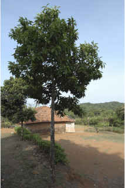

Images :



| Habit : | Trees , buttressed , up to 30 m tall. |
| Leaves : | Leaves simple , alternate , spiral ; petiole 1-3 cm long, stout and planoconvex in cross section; lamina 9.5-25 x 3.5-9 cm, elliptic-lanceolate , apex acuminate with twisted acumen , base acute to attenuate , margin slightly undulate , glabrous , chartaceous ; midrib nearly flat above; secondary_nerves 12-16 pairs; tertiary_nerves closely and strongly reticulate . |
| Inflorescence / Flower : | Flowers solitary , axillary , large, yellow, fragrant. |
| Fruit and Seed : | Follicles , warty , 2-3 cm long, arranged as spike , dehiscing dorsally ; seed 1, scarlet. |